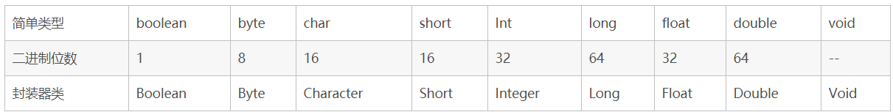

Java语言是静态类型的（statical typed)，也就是说所有变量和表达式的类型再编译时就已经完全确定。由于是statical typed，导致Java语言也是强类型（Strong typed）的。强类型意味着每个变量都具有一种类型，每个表达式具有一种类型，并且每种类型都是严格定义的，类型限制了变量可以hold哪些值，表达式最终产生什么值。同时限制了这些值可以进行的操作类型以及操作的具体方式。所有的赋值操作，无论是显式的还是在方法调用中通过参数传递，都要进行类型兼容性检查。
数据类型
在java源代码中，每个变量都必须声明一种类型（type）。有两种类型：primitive type和reference type。引用类型引用对象（reference to object），而基本类型直接包含值（directly contain value）。因此，Java数据类型（type）可以分为两大类：基本类型（primitive types）和引用类型（reference types）。primitive types 包括boolean类型以及数值类型（numeric types）。numeric types又分为整型（integer types）和浮点型（floating-point type）。整型有5种：byte short int long char(char本质上是一种特殊的int)。浮点类型有float和double。
对象是动态创建的类实例或者动态创建的数组。The value of reference types are references to objects，而引用一般是指内存地址。所有的对象（包括数组）支持Object类中定义的方法。String literals are presented by String object.
java有两种类型（type），与之相对应的是两种数据的值（two kinds of data values that can be stored in variable, pass as arguments and returned by methods)，这两只data values是：primitive values，reference values。也许这么理解起来更方便（虽然不严谨），Java变量有两种：primitive variable和reference variable，在变量中，它们分别存储primitive value和reference value。
null是一种特殊的type，但是你不能声明一个变量为null类型，null type的唯一取值就是null。null可以负值给任意的引用类型或者转化成任意的引用类型。在实践中，一般把null当做字面值（literal），这个字面值可是是任意的引用类型。
基本类型
Java为基本类型提供语言级别的支持，即已经在Java中预定义，用相应的保留关键字表示。基本类型是单个值，而不是复杂的对象，基本类型不是面向对象的，主要出去效率方面的考虑，但是同时也提供基本类型的对象版本，即基本类型的包装器（wrapper）。可以直接使用这些基本类型，也可以使用基本类型构造数组或者其他自定义类型。基本类型具有明确的取值范围和数学行为。
基本类型，或者叫做内置类型，是JAVA中不同于类的特殊类型。它们是我们编程中使用最频繁的类型。java是一种强类型语言，第一次申明变量必须说明数据类型，第一次变量赋值称为变量的初始化。
Java的简单类型及其封装器类
Java基本类型共有八种，基本类型可以分为三类，字符类型char，布尔类型boolean以及数值类型byte、short、int、long、float、double。数值类型又可以分为整数类型byte、short、int、long和浮点数类型float、double。JAVA中的数值类型不存在无符号的，它们的取值范围是固定的，不会随着机器硬件环境或者操作系统的改变而改变。实际上，JAVA中还存在另外一种基本类型void，它也有对应的包装类 java.lang.Void，不过我们无法直接对它们进行操作。8种类型表示范围如下：
byte：8位，最大存储数据量是255，存放的数据范围是-128~127之间。
short：16位，最大数据存储量是65536，数据范围是-32768~32767之间。
int：32位，最大数据存储容量是2的32次方减1，数据范围是负的2的31次方到正的2的31次方减1。
long：64位，最大数据存储容量是2的64次方减1，数据范围为负的2的63次方到正的2的63次方减1。
float：32位，数据范围在3.4e-45~1.4e38，直接赋值时必须在数字后加上f或F。
double：64位，数据范围在4.9e-324~1.8e308，赋值时可以加d或D也可以不加。
boolean：只有true和false两个取值。
char：16位，存储Unicode码，用单引号赋值。
Java决定了每种简单类型的大小。这些大小并不随着机器结构的变化而变化。这种大小的不可更改正是Java程序具有很强移植能力的原因之一。下表列出了Java中定义的简单类型、占用二进制位数及对应的封装器类。

封装类为各个数据类型提供一些数据的操作方法，可以直接使用；
例如String跟int的互相转化：
1 | String a = "21";int b = Integer.parseInt(a);//String 转int。 |
对于数值类型的基本类型的取值范围，我们无需强制去记忆，因为它们的值都已经以常量的形式定义在对应的包装类中了。如：
基本类型byte 二进制位数：Byte.SIZE最小值：Byte.MIN_VALUE最大值：Byte.MAX_VALUE
基本类型short二进制位数：Short.SIZE最小值：Short.MIN_VALUE最大值：Short.MAX_VALUE
基本类型char二进制位数：Character.SIZE最小值：Character.MIN_VALUE最大值：Character.MAX_VALUE
基本类型double 二进制位数：Double.SIZE最小值：Double.MIN_VALUE最大值：Double.MAX_VALUE
注意：float、double两种类型的最小值与Float.MIN_VALUE、 Double.MIN_VALUE的值并不相同，实际上Float.MIN_VALUE和Double.MIN_VALUE分别指的是 float和double类型所能表示的最小正数。也就是说存在这样一种情况，0到±Float.MIN_VALUE之间的值float类型无法表示，0 到±Double.MIN_VALUE之间的值double类型无法表示。这并没有什么好奇怪的，因为这些范围内的数值超出了它们的精度范围。
Float和Double的最小值和最大值都是以科学记数法的形式输出的，结尾的”E+数字”表示E之前的数字要乘以10的多少倍。比如3.14E3就是3.14×1000=3140，3.14E-3就是3.14/1000=0.00314。
Java基本类型存储在栈中，因此它们的存取速度要快于存储在堆中的对应包装类的实例对象。从Java5.0（1.5）开始，JAVA虚拟机（Java Virtual Machine）可以完成基本类型和它们对应包装类之间的自动转换。因此我们在赋值、参数传递以及数学运算的时候像使用基本类型一样使用它们的包装类，但这并不意味着你可以通过基本类型调用它们的包装类才具有的方法。另外，所有基本类型（包括void）的包装类都使用了final修饰，因此我们无法继承它们扩展新的类，也无法重写它们的任何方法。
基本类型的优势：数据存储相对简单，运算效率比较高
包装类的优势：有的容易，比如集合的元素必须是对象类型，满足了java一切皆是对象的思想
JAVA中的常量
十六进制整型常量：以十六进制表示时，需以0x或0X开头，如0xff,0X9A。
八进制整型常量：八进制必须以0开头，如0123，034。
长整型：长整型必须以L作结尾，如9L,342L。
浮点数常量：由于小数常量的默认类型是double型，所以float类型的后面一定要加f(F)。同样带小数的变量默认为double类型。
如：float f;
f=1.3f;//必须声明f。字符常量：字符型常量需用两个单引号括起来（注意字符串常量是用两个双引号括起来）。Java中的字符占两个字节。一些常用的转义字符：
①\r表示接受键盘输入，相当于按下了回车键；
②\n表示换行；
③\t表示制表符，相当于Table键；
④\b表示退格键，相当于Back Space键；
⑤'表示单引号；
⑥'‘表示双引号；
⑦\表示一个斜杠\。
数据类型之间的转换
简单类型数据间的转换
两种方式:自动转换和强制转换,通常发生在表达式中或方法的参数传递时。
自动转换
具体地讲,当一个较”小”数据与一个较”大”的数据一起运算时,系统将自动将”小”数据转换成”大”数据,再进行运算。而在方法调用时,实际参数较”小”,而被调用的方法的形式参数数据又较”大”时(若有匹配的,当然会直接调用匹配的方法),系统也将自动将”小”数据转换成”大”数据,再进行方法的调用,自然,对于多个同名的重载方法,会转换成最”接近”的”大”数据并进行调用。这些类型由”小”到”大”分别为 (byte，short，char)–int–long–float—double。这里我们所说的”大”与”小”,并不是指占用字节的多少,而是指表示值的范围的大小。
下面的语句可以在Java中直接通过：
byte b;int i=b; long l=b; float f=b; double d=b;
如果低级类型为char型，向高级类型（整型）转换时，会转换为对应ASCII码值，例如
char c=’c’; int i=c;
System.out.println(“output:”+i);输出：output:99;
对于byte,short,char三种类型而言，他们是平级的，因此不能相互自动转换，可以使用下述的强制类型转换。
short i=99 ; char c=(char)i; System.out.println(“output:”+c);输出：output:c;
强制转换
将”大”数据转换为”小”数据时，你可以使用强制类型转换。即你必须采用下面这种语句格式： int n=(int)3.14159/2;可以想象，这种转换肯定可能会导致溢出或精度的下降。
表达式的数据类型自动提升
所有的byte,short,char型的值将被提升为int型；
如果有一个操作数是long型，计算结果是long型；
如果有一个操作数是float型，计算结果是float型；
如果有一个操作数是double型，计算结果是double型；
例， byte b; b=3; b=(byte)(b*3);//必须声明byte。
包装类过渡类型转换
一般情况下，我们首先声明一个变量，然后生成一个对应的包装类，就可以利用包装类的各种方法进行类型转换了。例如：
当希望把float型转换为double型时：
1
2
3
4
5float f1=100.00f;
Float F1=new Float(f1);
double d1=F1.doubleValue();//F1.doubleValue()为Float类的返回double值型的方法当希望把double型转换为int型时：
1
2
3
4
5double d1=100.00;
Double D1=new Double(d1);
int i1=D1.intValue();简单类型的变量转换为相应的包装类，可以利用包装类的构造函数。即：Boolean(boolean value)、Character(char value)、Integer(int value)、Long(long value)、Float(float value)、Double(double value)
而在各个包装类中，总有形为××Value()的方法，来得到其对应的简单类型数据。利用这种方法，也可以实现不同数值型变量间的转换，例如，对于一个双精度实型类，intValue()可以得到其对应的整型变量，而doubleValue()可以得到其对应的双精度实型变量。
字符串与其它类型间的转换
其它类型向字符串的转换
调用类的串转换方法:X.toString();
自动转换:X+””;
使用String的方法:String.volueOf(X);
字符串作为值,向其它类型的转换
先转换成相应的封装器实例,再调用对应的方法转换成其它类型
例如，字符中”32.1”转换double型的值的格式为:new Float(“32.1”).doubleValue()。也可以用:Double.valueOf(“32.1”).doubleValue()
静态parseXXX方法
1
2
3
4
5
6
7
8
9
10
11
12
13String s = "1";
byte b = Byte.parseByte( s );
short t = Short.parseShort( s );
int i = Integer.parseInt( s );
long l = Long.parseLong( s );
Float f = Float.parseFloat( s );
Double d = Double.parseDouble( s );Character的getNumericValue(char ch)方法
Date类与其它数据类型的相互转换
整型和Date类之间并不存在直接的对应关系，只是你可以使用int型为分别表示年、月、日、时、分、秒，这样就在两者之间建立了一个对应关系，在作这种转换时，你可以使用Date类构造函数的三种形式：
Date(int year, int month, int date)：以int型表示年、月、日
Date(int year, int month, int date, int hrs, int min)：以int型表示年、月、日、时、分
Date(int year, int month, int date, int hrs, int min, int sec)：以int型表示年、月、日、时、分、秒
在长整型和Date类之间有一个很有趣的对应关系，就是将一个时间表示为距离格林尼治标准时间1970年1月1日0时0分0秒的毫秒数。对于这种对应关系，Date类也有其相应的构造函数：Date(long date)。
获取Date类中的年、月、日、时、分、秒以及星期你可以使用Date类的getYear()、getMonth()、getDate()、getHours()、getMinutes()、getSeconds()、getDay()方法，你也可以将其理解为将Date类转换成int。
而Date类的getTime()方法可以得到我们前面所说的一个时间对应的长整型数，与包装类一样，Date类也有一个toString()方法可以将其转换为String类。
有时我们希望得到Date的特定格式，例如20020324，我们可以使用以下方法，首先在文件开始引入，
1
2
3
4
5
6
7
8
9
10
11
12
13
14
15
16
17
18
19
20
21
22
23
24
25import java.text.SimpleDateFormat;
import java.util.*;
java.util.Date date = new java.util.Date();
//如果希望得到YYYYMMDD的格式
SimpleDateFormat sy1=new SimpleDateFormat("yyyyMMDD");
String dateFormat=sy1.format(date);
//如果希望分开得到年，月，日
SimpleDateFormat sy=new SimpleDateFormat("yyyy");
SimpleDateFormat sm=new SimpleDateFormat("MM");
SimpleDateFormat sd=new SimpleDateFormat("dd");
String syear=sy.format(date);
String smon=sm.format(date);
String sday=sd.format(date);
总结
只有boolean不参与数据类型的转换
自动类型的转换：
常数在表数范围内是能够自动类型转换的
数据范围小的能够自动数据类型大的转换（注意特例）int到float，long到float，long到double 是不会自动转换的，不然将会丢失精度
引用类型能够自动转换为父类的
基本类型和它们包装类型是能够互相转换的
强制类型转换：用圆括号括起来目标类型，置于变量前
注意事项
java开发过程中整型用int、小数用double、布尔用boolean；
类型转换都是小范围向大范围转换，大范围往小范围转化需要用到强制转换；
例如：(1)int a=12; double b=a;(2) double a=3.0;int b=(int)a;long, byte, char等很少用到，一般在数据处理的时候会用到；
int跟char之间的转换是通过ASCII转化的；
例如：char a = ‘A’;int b = a; System.out.prientln(b);最后输出的结果为65；String类型，String是项目中必不可少且使用最多的数据类型，它属于引用数据类型中“类”的范畴。
引用类型
Java有 5种引用类型（对象类型）：类 接口 数组 枚举 标注
引用类型：底层结构和基本类型差别较大
JVM的内存空间：
Heap 堆空间：分配对象 new Student（）
Stack 栈空间：临时变量 Student stu
Code 代码区 ：类的定义，静态资源 Student.class
eg：Student stu = new Student（）； //new 在内存的堆空间创建对象
stu.study(); //把对象的地址赋给stu引用变量
上例实现步骤：
JVM加载Student.class 到Code区
new Student()在堆空间分配空间并创建一个Student实例
将此实例的地址赋值给引用stu， 栈空间
Java把内存分成两种，一种叫做栈内存，一种叫做堆内存在函数中定义的一些基本类型的变量和对象的引用变量都是在函数的栈内存中分配。当在一段代码块中定义一个变量时，java就在栈中为这个变量分配内存空间，当超过变量的作用域后，java会自动释放掉为该变量分配的内存空间，该内存空间可以立刻被另作他用。堆内存用于存放由new创建的对象和数组。在堆中分配的内存，由java虚拟机自动垃圾回收器来管理。在堆中产生了一个数组或者对象后，还可以在栈中定义一个特殊的变量，这个变量的取值等于数组或者对象在堆内存中的首地址，在栈中的这个特殊的变量就变成了数组或者对象的引用变量，以后就可以在程序中使用栈内存中的引用变量来访问堆中的数组或者对象，引用变量相当于为数组或者对象起的一个别名。
引用变量是普通变量，定义时在栈中分配内存，引用变量在程序运行到作用域外释放。而数组＆对象本身在堆中分配，即使程序运行到使用new产生数组和对象的语句所在地代码块之外，数组和对象本身占用的堆内存也不会被释放，数组和对象在没有引用变量指向它的时候，才变成垃圾，不能再被使用，但是仍然占着内存，在随后的一个不确定的时间被垃圾回收器释放掉。这个也是java比较占内存的主要原因，实际上，栈中的变量指向堆内存中的变量，这就是 Java 中的指针!
类Class
可以是我们创建的，主要是讲解几个java库中的类
Object ：Object是一个很重要的类，Object是类层次结构的根类，每个类都使用Object作为超类，所有对象（包括数组）都实现这个类的方法。用Object可以定义所有的类
如： Object object= new Integer(1); 来定义一个Interger类
Integer i=(Integer) object; 在来把这个Object强制转换成Interger类
String ：String类代表字符串，Java 程序中的所有字符串字面值（如”abc”）都作为此类的实例来实现。检查序列的单个字符、比较字符串、搜索字符串、提取子字符串、创建字符串副本、在该副本中、所有的字符都被转换为大写或小写形式。
Date ：Date表示特定的瞬间，精确到毫秒。Date的类一般现在都被Calendar 和GregorianCalendar所有代替
Void ：Void 类是一个不可实例化的占位符类，它保持一个对代表 Java 关键字 void 的 Class 对象的引用。
接口interface
可以是我们创建的，主要是讲解几个java库中的接口interface
List
add() : 在列表的插入指定元素。
remove()：移除列表中指定位置的元素。
get(int index)：返回列表中指定位置的元素。
Map<K,V>：
K - 此映射所维护的键的类型
V - 映射值的类型 将键映射到值的对象。一个映射不能包含重复的键；每个键最多只能映射到一个值。
put(K key,V value)：将指定的值与此映射中的指定键关联（可选操作）。如果此映射以前包含一个该键的映射关系，则用指定值替换旧值（当且仅当，返回 true 时，才能说映射 m 包含键 k 的映射关系）。
remove(Object key)如果存在一个键的映射关系，则将其从此映射中移除（可选操作）。更确切地讲，如果此 映射包含从满足(key==null ? k==null :key.equals(k))的键 k 到值 v 的映射关系，则移除该映射关系。（该映射最多只能包含一个这样的映射关系.） get(Object key)：返回指定键所映射的值；如果此映射不包含该键的映射关系，则返回 null。
数组Array
数组：存储在一个连续的内存块中的相同数据类型（引用数据类型）的元素集合。
数组中的每一个数据称之为数组元素，数组中的元素以索引来表示其存放的位置，索引（下标）从0开始。
数组的定义
第一种方式：类型[] 数组名; 如 int[] nums;
第二种方式：类型数组名[]; 如 int nums[];
大多数Java程序员喜欢使用第一种风格,因为它把数据类型int[],和变量名num分开了.
数组的初始化
Java中数组必先初始化后才能使用.
初始化就是给数组元素分配内存，并为每个元素赋初始值。
初始化数组的两种方式：
- 静态初始化:
语法格式:类型[] 数组名 = new 数组类型[]{元素1,元素2,元素3,…元素n};
简化语法：类型[] 数组名 = {元素1,元素2,元素3…元素n}; - 动态初始化:
如果我们事先不知道数组里存储哪些数据，只知道需要存储数据的个数，此时可以使用动态初始化方式。
动态初始化：初始化时由我们指定数组的长度，系统自动为数组元素分配初始值。
格式：类型[] 数组名 = new 数组类型[数组长度];
注意:无论，以哪种方式初始化数组，一旦初始化完成，数组的长度就固定了，不能改变，除非重新初始化。也就是说数组是定长的。
为什么Java里有基本数据类型和引用数据类型？
引用类型在堆里，基本类型在栈里。
栈空间小且连续，往往会被放在缓存。引用类型cache miss率高且要多一次解引用。
对象还要再多储存一个对象头，对基本数据类型来说空间浪费率太高